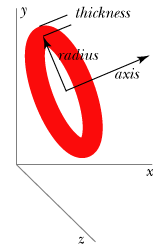

 The ring object is by default circular, with a specified radius and thickness and with its center given by the pos attribute:
ring(pos=vector(1,1,1),
axis=vector(0,1,0),
radius=0.5, thickness=0.1)
The ring object has the following attributes and default values, similar to those for cylinders: pos vector(0,0,0), axis vector(1,0,0), length (0.2), color vector(1,1,1) which is color.white, red (1), green (1), blue (1), opacity (1), shininess (0.6), emissive (False), texture, and up (0,1,0). As with cylinders, up has a subtle effect on the 3D appearance of a ring unless a non-smooth texture is specified or the ring is oval. The axis attribute only affects the orientation of the ring; the magnitude of the axis attribute is irrelevant. Additional ring attributes:
radius Radius
of the central part of the ring, default = 1, so
outer radius = radius+thickness
inner radius = radius-thickness
thickness The radius of the cross section of the ring (1/10th of radius if not specified), not the full diameter as you might expect.
size Instead of specifying radius and thickness, you can make the ring be oval by specifying its size as size=vector(length,height,width), with different height and width..
Note that the pos attribute for cylinder, arrow, cone, and pyramid corresponds to one end of the object, whereas for a ring, sphere, and box it corresponds to the center of the object.
If you include make_trail=True when you create the object, a trail will be left behind the object as you move it. For related options, see Leaving a Trail.
See Rotating an Object for an easy way to change the orientation of an object.
See description of Additional Attributes available for all 3D display objects.